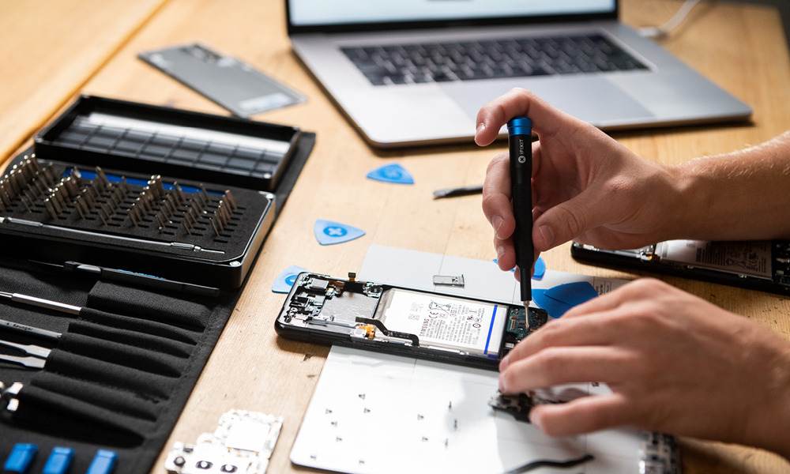
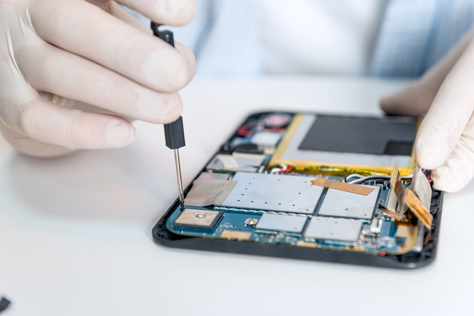

Smartphone Repair
Cracked screen, battery replacement, water damage, and more.
Our skilled technicians can repair various smartphone issues, including:
- Screen Replacement
- Battery Replacement
- Water Damage Repair
- Charging Port Issues
- Software Troubleshooting
Contact us for a free estimate on your smartphone repair needs.

Laptop Repair
Broken screen, keyboard replacement, hardware upgrades, and more.
We specialize in repairing various laptop issues, including:
- Screen Replacement
- Keyboard Repair
- Hard Drive Replacement
- RAM Upgrades
- Overheating Problems
Bring your laptop in for a diagnostic and let our experts take care of it.

Tablet Repair
Touchscreen issues, battery problems, charging port repair, and more.
Our technicians are skilled in handling tablet repairs such as:
- Touchscreen Replacement
- Battery Replacement
- Charging Port Repair
- Software Optimization
- Button and Speaker Repair
We can repair various tablet brands and models, including iPads, Samsung Galaxy Tabs, and more.